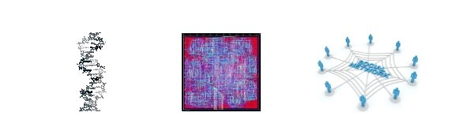
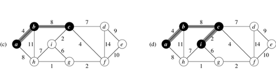
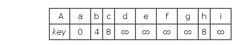

In Computer Science, graph traversal is a set of problems of visiting all the nodes(or vertices in a graph in a particular manner, updating and/or checking their attributes along the way.
Graph is a very common representation in many applications. Graph traversal algorithms provide crucial tools in many computational fields ranging from genomics to electronic design automation(EDA) to social network analysis.
Generally, graph has more complicated structure than array, list, and tree. The representation of graph could either be adjacency matrix or adjacency list and different data structures are preferred in different situation. For example, adjacency lists are often used to represent sparse graph due to less edge storage. But in this article we will pay more attention to the topology of a graph instead of the underlayer representation.
Traditional algorithm books(like CLRS) "visualize" the process of traversing by presenting a series of snapshots:
And a table to reflect the changes to the intermediate variables, like:
OK... They are just books. How could you ask for more?
But what if we do this?
It's interactive. And the data are associated with the graph. We tailored springy.js, a library using directed forced algorithm to layout graph, to visualize all the algorithms here. The codes are written in JavaScript.
The visualiztions are intended to help one understand the process of exploration and how the values are updated during traverse.
Breadth-first search(BFS for short) is a classic graph algorithm. Given a graph G=(V, E), and a source vertex s, BFS produces a breath-first tree with the root s and all reachable vertices. The traditional BFS algorithm keeps exploring the tree until each reachable vertex has been assigned a level which tells the height in the tree, or the minimum hoops from the root. (In some cases, algorithm will simply preserve the pointer referencing to the predecessor.)
The main idea of BFS is traversing nodes a graph by level order. All the vertices in level n are visited before the traversal of level n+1 starts. Usually, a queue* is used in a serial BFS implementation, to keep the order of nodes being visited.
Let's see a live example. Initially, only the root(node 0) is in the queue(marked pink). In the first iteration, we dequeue the first element in the queue(node 0) and visit it, thus marking node 0 gray. Meanwhile, we find all the nodes adjacent to 0(node 1, 2, 3) and put them onto queue, since they have never been dicovered. In the second iteration, node 1 is dequeued and visited. At the same time, one of its neighbours, node 4, is appended to the queue. However, the other neighbour(node 0) is ignored, since we have visited it before. As you can see, the final result of BFS is a tree.
It's not hard to see the time complexity of BFS is O(V+E) since each vertex in the graph has been marked twice(first pink, then gray) and each edge has been colored only once.
Pseudocode:
// start from root
Q.enqueue(root);
root.color = pink;
while (!Q.empty()) {
u = Q.dequeue();
u.color = gray;
foreach (v in u.neighbours()) {
if (v.color==white) {
v.color = pink;
Q.enqueue(v);
}
}
}
Breath-first search can be used to find connected components in a graph. Connected component is a subgraph of G=(V, E), in which all vertices can reach another. The connected components labeling problem is to find the different connected components in a graph.
The algorithm continues starting a BFS journey from an unvisited node until all nodes in the graph have been visited. In the following example, BFS is launched twice. The first BFS starts from vertex 0 as root and the second one begins at 4. In each iteration of BFS, every vertex's ID value is updated to the ID value of his predecessor. Finally, All the vertices in a connected component are labeled with the same ID, which is the ID of BFS tree root.
Pseudocode:
foreach (node in G) {
if(node.color == white)
BFS(node);
}
Breath-first search expands nodes of the same level by one hop. On the contrary, depth-first search(DFS) explores as far as possible along each existing branch. In effect, DFS keeps entering the first child node of search tree that appears until it encounters a childless node, then it visits the node and backtracks, returning to the most recent decovered node.
An implementation of DFS can be both recursive and non-recursive(iterative). Here we will introduce the iterative version. The algorithm uses a FILO stack to record the decovered nodes in the halfway.
In the following example, we start a DFS on node 0 as the root. In the first iteration, we dicover node 1 and node 2 and push them into stack(pink). Now the stack looks like [bottom] 0, 2, 1 [top]. In the second iteration, we enter node 1, the first child of node 0, and dicover 5 and 6 and push them into stack. Now the stack looks like [bottom] 0, 2, 1, 6, 5 [top]. Then we enter node 5, the first child of node 1, and find node 4. Since node 4 has no child undiscovered, we visit it(gray) and backtack to node 5, the one appears at the top of stack...
Pseudocode:
// start from root
S.push(root);
root.color = pink;
while (!S.empty()) {
u = S.top();
flag = 0; // has discovered neighbour?
foreach (v in u.neighbours()) {
if (v.color == white) {
v.color = pink;
S.push(v);
flag = 1;
}
}
if (flag == 0) {
u.color = black;
u.pop();
}
}
DFS has a time complexity of O(V+E) since each vertex in the graph has been marked twice(first pink, then gray) and each edge has been colored only once.
It is convenient to use depth-first search to check whether or not an undirected graph contains a cycle.
In our example, when we arrive at node 4, being aware of that node 3 has been encounterd before(dicoverd by node 2) and what we are traversing now will be a back edge and hence a cycle is detected.
Pseudocode:
foreach (v in u.neighbours()) {
if (v.color == white) {
v.color = pink;
S.push(v);
flag = 1;
} else if (v.color == pink && u.prev != v) {
alert("cycle detected!");
}
}
A diagraph is acyclic if it has no cycles. Such graph is often referred to as a directed acyclic graph, or DAG for short. DAGs can be used to describe the dependencies between tasks. If there is a directed edge in the graph from A to B, that means task A should be performed before task B. In a DAG, if task A depends on B and B depends on C, task A must be depending on C. A reasonable schedule strategy is just a valid sequece for the tasks.
Say we have 4 instructions to perform. I1 depends on I2 and I3 depends on I4. But there's no dependencies between (I1, I3), (I1, I4), (I2, I3) and (I2, I4). So an instruction sequence of I2, I4, I1, I3 is acceptable while I2, I3, I4, I1 is a wrong order.
Topological sort is the process to find a valid order for a given DAG. The most straightforward way to construct a topological ordering of a DAG is using DFS, which requires linear time.
The following example is borrowed from CLRS. The DAG describes the dependencies of actions performed when someone is getting dressed. For instance, one should put on socks before he putting shoes on.
The property of DFS assures the deeper node in the dependency chain is always visited first. For example, node "undershorts" will not be visited until node "pants" is visited.
Therefore, DFS gives a feasible topological order of the DAG: shirt(11), tie(10) , socks(8), undershorts(7), pants(6), belt(5), jacket(4), shoes(1). All we have to do is recording the time when a node is visited.
The Single-Source Shortest Paths(SSSP for short) is the problem of computing the shortest path distance from a root vertex r to each vertex in a weighed graph.
A good anology is when your driving a car among cities, a call to SSSP subroutine can help you find the shortcut to each city. That's why the algorithm is often used in GPS and network routing.
If the edge weights are all non-negative, then the SSSP problem can be solved with Dijkstra algorithm. Otherwise, Bellman-Ford algorithm can be used instead.
Dijkstra's SSSP explores the graph with a greedy method. In each iteration, the algorithm visits a node with the so-far-smallest distance from root among all the nodes in the graph.
dist(1) is shorthand for "distance from root to node 1"
Assume the root is node 0. To start, make the distance to the other node in the graph with infinity(100,000 is large enough in our case). In the first iteration, node 0 is visited. Meanwhile the dist(1)* is updated to 41 and dist(5) is updated to 29. They are both unreachable before node 0 is visited. In the second iteration, we visit node 5 since it has the smallest distance from root, updating dist(4) to 50, which is the cost if we manage to arrive at node 5(cost 29) first and pay a travel to node 4(cost 21)... After several iterations, we arrive at node 2. This time we are not going to update dist(3), because it costs 132 if we come from 2(cost 50) coming from 3(cost 82) but it only costs 86 if we manage to reach 4(cost 50) and then go to 3(cost 36).
During the exploration, a priority queue Q is used to maintain the unvisited nodes, which provides an operation to extract the minimum. The time complexity of Dijkstra algorithm is relevant to the implementation of Q. If Q is a linked list or array, then finding minium from Q is a linear search through all nodes in Q, which requires O(V). But if we use a Fibonacci heap as a priority queue, the search time can be reduced to O(logV).
Like breath-first search, Dijkstra SSSP produces a tree(shortest-path tree) from the root.
pseudocode
// intialize node attributes
foreach (v in G) {
v.dist = infinity;
v.pre = undefined;
}
// all nodes in Q
Q = G.all();
G.nodes[0].dist = 0;
while(!Q.empty()) {
u = Q.dequeue(); //u is the smallest distance in dist[]
foreach (v in u.neighbours()) {
// update v's dist, if find a shorter path
if (u.dist + u.distance_to(v) < v.dist) {
v.dist = u.dist + u.distance_to(v);
v.pre = u;
Q.reorder(); // since distance changes
}
}
}Prim's algorithm finds a minimum spanning tree(MST) for a connected weighted undirected graph.
For a given G=(V, E), a spanning tree is a subgraph of G connecting all the vertices in V and it is a tree. The minimum spanning tree is then the spanning tree with the smallest weight.
Like Dijkstra's algorthim(SSSP), Prim's algorithm is a greedy strategy, because each time it chooses an edge E=(u, v) with the minimal weight and appends it to the tree. It also uses a priority queue Q to maintain the unvisited nodes. However, the key in Q is the minimal cost if we connect the unvisited node to the spanning tree, while it represents the shortest distance from root in the Dijkstra algorithm.
pseudocode
// intialize node attributes
foreach (v in G) {
v.cost = infinity;
v.pre = undefined;
}
// all nodes in Q
Q = G.all();
G.nodes[0].cost = 0;
while(!Q.empty()) {
u = Q.dequeue(); //u is the smallest value in cost[]
foreach (v in u.neighbours()) {
if (Q.has(v) && u.distance_to(v) < v.cost) {
v.dist = u.distance_to(v);
v.pre = u;
Q.reorder(); // decreasekey
}
}
}